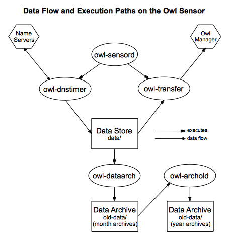

|
|
Owl Monitoring SystemSensor Installation Manual |
| 2.1. | Create an Owl Sensor Account | ||
| 2.2. | SSH Initialization | ||
| 2.3. | Install the Owl Environment | ||
| 2.4. | Install Required Perl Modules | ||
This section gives installation procedures for installing the Owl Monitoring software on sensor hosts. Installation of the Owl sensor is relatively simple. This requires the creation of a sensor account, SSH initialization, software installation, and a few other set-up activities. The most complicated aspect is likely to be coordinating SSH access with the Owl manager host. The required actions for installing an Owl sensor are described in this section.
The installation instructions discuss software installation of Owl software and supporting third-party software packages. There are a number of Owl-specific configuration actions that must be performed, and these are detailed in section 4.
The Owl sensors require Perl. You must install it on your system if it isn't already available. If the sensor host's Perl or operating system does not support threading, then each query will run in its own process, rather than all queries running in their own threads within a single process.
Below is a diagram of the flow of Owl sensor data on the Owl sensor. The details may not make sense at this stage, but this will show how the various pieces fit together.

The Owl sensor will run several daemons and cron jobs. It is a good idea, but not an imperative one, for these to run as their own user. It is easier to segregate the Owl sensor's actions, processes, and files if they are performed by a dedicated user.
However, it is certainly acceptable to run them as yourself or some other existing user. If you choose to do this, you may disregard the rest of this section.
There are no requirements on the Owl username; it may be anything that makes sense to you. Some possibilities are: owl, owl-sensor, owl-user, bob, and tricorder.
To create a new user, use your operating system's user-creation command (e.g., adduser or useradd) to create a new unprivileged user.
Examples of commands to create a new user:
| Operating System | Example Command | Notes | ||
| Centos | useradd hoots-mon | remember to add a password | ||
| FreeBSD | adduser | you'll be prompted for all user information | ||
| Mac OS X | "Users & Groups" in System Preferences | you'll be prompted for all user information | ||
Owl sensor data are transferred to the Owl manager using the rsync and ssh commands. You must initialize the Owl sensor user's SSH environment by generating keys for the ssh command to use. This may be dependent on your operating system or the version of SSH installed.
The OpenSSH package is a widely available SSH package, and its ssh-keygen command is used to create SSH keys. This manual will assume that OpenSSH is being used.
There are no specific key parameters required by Owl. The generated key must be sufficient to allow the sensor and the manager to transfer files without having to manually enter a password.
Example of a command to generate a new SSH key:
$ ssh-keygen -b 1024 -t dsa
If the Owl sensor will be pushing data to the manager, then the newly generated public key must be transferred to the Owl manager host. This key must be added to the list of authorized keys for the Owl manager's account. For OpenSSH, the public key will be in a file called id_dsa.pub and it will be added to the authorized_keys file on the manager host. Once the sensor's public key has been added to the Owl manager, you must ensure that the Owl sensor user may successfully transfer files to the manager without need of a password.
If the Owl manager will be pulling data from the sensor, then you must do the following things. First, install the rrsync utility. This is a front-end to rsync that restricts the locations to which rsync may copy data. rrsync is available here: http://ftp.samba.org/pub/unpacked/rsync/support/rrsync. Next, the manager's administrator must provide you with a public SSH key. This public key must be added to the authorized_keys file belonging to the Owl sensor account.
The authorized_keys entry should look something like this:
command="/usr/local/bin/rrsync /owl/data/sensor42" ssh-rsa AAAAB3Nza...A3Q== owl-manager@owl.example.com
You must select a place to install the Owl sensor's files. The files and directories may live in the Owl sensor user's home directory, a subdirectory beneath that home directory, or somewhere else entirely. For ease of finding these files later, it may be helpful to keep the Owl sensor's files all beneath a single directory.
There are a set of directories that will be used by the Owl sensor: bin, conf, and perllib. These names shouldn't be changed.
Additional modifications to the Owl sensor environment will be discussed in section 4.1.
Several installation examples are given below. For each, it is assumed the Owl sensor user is named owl-sensor.
Installation example 1: In this case, the software will be installed in the sensor user's home directory by unpacking a tar file located in /tmp/owl-sensor.tar.gz.
$ cd ~owl-sensor
$ tar xzf /tmp/owl-sensor.tar.gz
Installation example 2: In this case, the software will be installed in a subdirectory within the sensor user's home directory by unpacking a tar file located in /tmp/owl-sensor.tar.gz.
$ mkdir ~owl-sensor/owl-dir
$ cd ~owl-sensor/owl-dir
$ tar xzf /tmp/owl-sensor.tar.gz
There is a set of Perl modules required by the Owl sensor. These should be available through CPAN.
Modules required by the Owl sensor:
|
|
If the two threads-related modules are unavailable for your system, or if your version of Perl doesn't support threading, then the Owl sensor will run each query in its own process. In this case, these two modules are not needed.
Proceed to Section 3. An
Interlude on Sensor Queries for important information about defining
the queries performed by your Owl sensor.
If you have already read
Section 3, you may continue on with
Section 4. Adding Sensors
to complete the installation of the sensor.
|
Section 1. Operational Overview |
Owl Monitoring System Sensor Installation Manual |
Section 3. An Interlude on Sensor Queries |